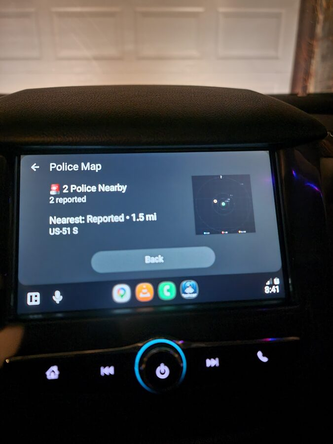
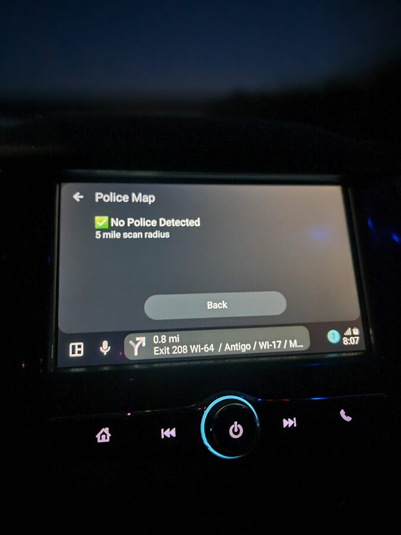

Real-Time Police Alerts on Android Auto: How It Works
Speed traps are a $6 billion dollar industry in the United States. Thousands of local departments rely on traffic ticket revenue, and drivers pay the price every day. Knowing where enforcement is active before you reach it is not about breaking the law. It is about driving with awareness instead of driving blind.
Phone Dashcam includes a Police Map that runs directly on Android Auto. Open it on your car's infotainment screen and it scans for reported police activity around your current location, showing exactly how many officers are nearby, how far away the closest one is, and what road they are on. All of this displayed on a screen you can actually read while driving.

Police Map on Android Auto: 2 officers reported nearby, nearest on US-51 S at 1.5 miles
What the Police Map Shows on Android Auto
The Police Map is a dedicated screen within Phone Dashcam's Android Auto interface. When you tap it on your car's display, the app queries your current GPS position against its database and shows a clean, glanceable summary:
Police Count
The number of reported officers within your configured scan radius. A red alert icon appears when police are detected. A green checkmark means the area is clear.
Nearest Report
The distance and road name of the closest reported officer. In the example above, the nearest is 1.5 miles away on US-51 S. This tells you exactly which road to watch.
Radar Display
A visual radar in the corner of the screen showing the relative direction and distance of all reports in range. Orange and red dots represent reported positions. The center is your current location.
Scan Radius
Configurable from 1 to 10 miles. A 5-mile radius covers most highway approaches. Drop it to 1-2 miles in dense urban areas where you want more precise, immediate alerts.

Green status: no reported police within the 5-mile scan radius. Drive normally.
Where the Police Data Comes From
Phone Dashcam's police alert system pulls from two sources:
- 336,000+ static enforcement locations — A bundled database of speed cameras, red light cameras, Flock Safety ALPR (Automated License Plate Reader) cameras, and historically verified speed trap locations across the United States. This database is stored on-device and works without an internet connection.
- Crowd-sourced reports — Real-time reports from other drivers using the app. These update continuously and require a cellular data connection to receive. Reports include the type of enforcement (marked car, unmarked car, speed trap) and the specific location.
The static database alone covers the vast majority of fixed enforcement infrastructure. The real-time layer adds current police activity that does not have a permanent location, like a patrol car running radar on a highway shoulder.
Police Alerts vs Radar Detectors: Which Is Better?
Traditional radar detectors pick up Ka-band, K-band, and X-band signals emitted by police radar guns. They work, but they have significant limitations in 2026:
- LIDAR (laser) is increasingly common and gives you almost zero warning time. By the time a radar detector picks up a laser signal, the officer already has your speed.
- Instant-on radar means officers keep radar off until a vehicle approaches, giving detectors only a fraction of a second to alert.
- False positives from adaptive cruise control, blind spot monitoring, and automatic doors make radar detectors noisy and unreliable in urban areas.
- Price for a decent radar detector starts at $300 and goes above $600 for units that filter false alerts effectively.
GPS-based police alert apps take a completely different approach. Instead of detecting radio signals, they use location data to warn you about known enforcement positions before you are anywhere near them. You get a warning at a distance that actually gives you time to adjust, not a last-second beep as the laser hits your car.
Phone Dashcam combines both approaches in a single app: static enforcement databases for cameras and known trap locations, plus real-time crowd-sourced reports for active police. And it runs on Android Auto so the alerts appear on a screen that is actually in your line of sight.
How It Compares to Waze Police Alerts
Waze is the most popular app for crowd-sourced police reports. It is a navigation app first, and police reports are a feature layered on top. Here is how Phone Dashcam's police alerts compare:
- Dedicated police screen — Phone Dashcam has a full Police Map screen on Android Auto. Waze shows small icons on its navigation map that you have to notice while following directions.
- 336,000+ static locations — Phone Dashcam includes a massive offline database of cameras and enforcement infrastructure. Waze relies almost entirely on real-time user reports, which means coverage gaps on less-traveled roads.
- Dashcam recording — Phone Dashcam records your drive the entire time. Waze does not record video. If you need footage of an incident, you need a separate dashcam running anyway.
- Crash detection — Phone Dashcam detects impacts and locks footage automatically. Waze does not have this capability.
- No navigation overhead — Phone Dashcam's police alerts work independently of navigation. You do not need to set a destination or follow a route. The police map scans your radius constantly.
Waze is excellent at what it does. But if you want police alerts combined with a dashcam that records your drive, detects crashes, and puts everything on your car's Android Auto display, Phone Dashcam handles all of it in one app.
Setting Up Police Alerts on Android Auto
- Install Phone Dashcam from Google Play and upgrade to Pro ($6.99/month or $29.99/year) to unlock the Police Map.
- Connect to Android Auto via USB or wireless connection.
- Open Phone Dashcam on your car's head unit from the Android Auto app list.
- Tap Police Map on the Android Auto interface. The app immediately scans your surroundings.
- Adjust the scan radius in the app settings on your phone. Set it anywhere from 1 to 10 miles based on whether you drive mostly in cities or on highways.
The police map updates as you drive. No interaction needed after the initial tap. Keep an eye on it and the dashcam records everything in the background.
Types of Alerts in the Database
Phone Dashcam Pro's alert database covers more than just police speed traps. Here is the full breakdown of what the 336,000+ alert points include:
Speed Cameras
Fixed speed enforcement cameras at known locations. These are permanent installations that automatically issue tickets when vehicles exceed the posted limit.
Red Light Cameras
Intersection cameras that photograph vehicles running red lights. Tickets range from $75 to $500 depending on jurisdiction.
Flock Safety ALPR Cameras
Automated License Plate Reader cameras deployed by police departments across the country. These cameras log every plate that passes, building a database of vehicle movements. Over 4,000 law enforcement agencies use Flock Safety cameras.
Speed Trap Locations
Historically verified locations where police frequently conduct speed enforcement. These are not fixed cameras but recurring patrol positions where officers set up with radar or LIDAR.
Crowd-Sourced Reports
Real-time reports from other Phone Dashcam users marking active police positions. These appear as they are submitted and show the type of enforcement (marked car, unmarked car, speed trap).
Frequently Asked Questions
What is the best police alert app for Android Auto?
Phone Dashcam offers the most complete police alert experience on Android Auto. It combines a 336,000+ location offline database with real-time crowd-sourced reports, displayed on a dedicated Police Map screen on your car's infotainment display. It also records your drive as a full dashcam simultaneously, which no other police alert app does.
Are police alert apps legal?
In most US states, yes. GPS-based police alert apps use databases and crowd-sourced reports, not radar or laser detection hardware. Virginia and Washington DC have restrictions on radar detector devices specifically, but GPS-based apps operate in a different legal category. Laws vary by jurisdiction, so check your local regulations.
Do police alerts work without internet?
The 336,000+ static camera and enforcement locations are stored on your phone and work completely offline. Real-time crowd-sourced police reports require a cellular data connection. On a phone with a SIM card, both sources are active simultaneously.
How accurate are the police alerts?
Static camera locations (speed cameras, red light cameras, ALPR cameras) are verified positions and highly accurate. Speed trap locations are based on historical enforcement patterns and are generally reliable. Crowd-sourced reports depend on other users in your area and are most accurate on popular routes during peak driving hours.
Does the police map drain extra battery?
The police map uses GPS location that the dashcam is already tracking. There is no meaningful additional battery drain from the police alert feature. Your phone should be plugged into your car's USB port anyway, which keeps it charged while using Android Auto.
Drive with full awareness
Phone Dashcam Pro: real-time police alerts and a full dashcam on your car's Android Auto display. 336,000+ camera alerts, crowd-sourced reports, crash detection, and cloud backup. $6.99/month or $29.99/year.
Download Phone Dashcam Free